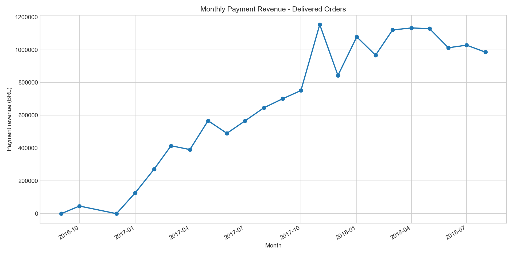
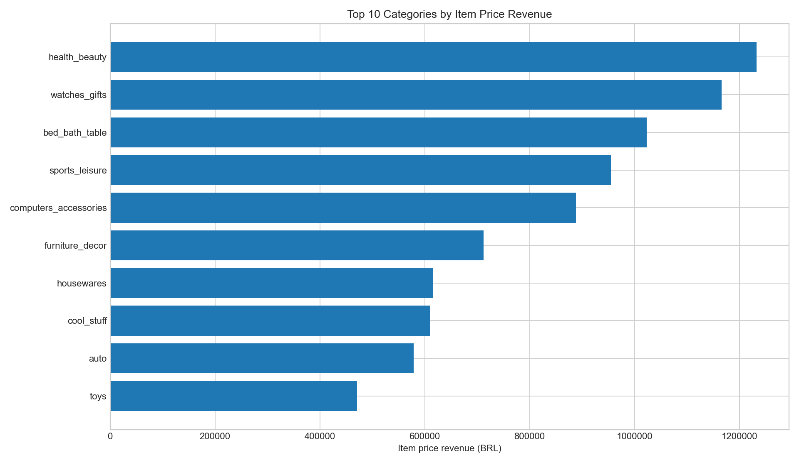
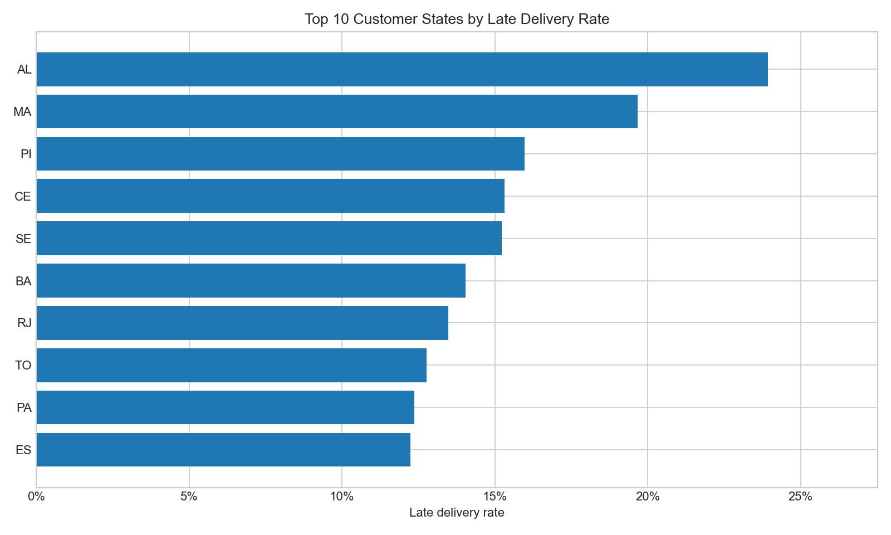
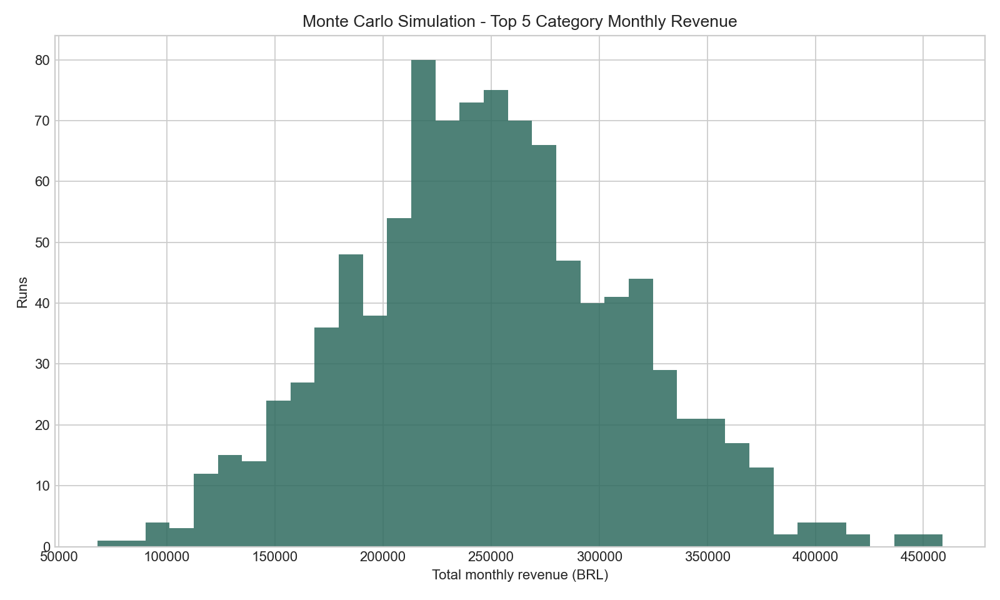

OLIST OPERATIONS ANALYTICS REPORT
Kỳ phân tích: 2016-09 đến 2018-08 | Dataset: 99,441 orders, Olist 2016-2018 | Filter: delivered orders
1. TỔNG QUAN KINH DOANH
Payment revenueBRL 15,422,462
YoY growth 2018 vs 201722.1%
AOVBRL 160
On-time delivery91.9%
Avg review4.16/5.0
Late delivery8.1%
- Peak demand: Tháng 11/2017 (Black Friday) - 1.6x median monthly revenue baseline.
- Delivered orders analyzed: 96,478; average delivery time: 12.6 days.
- Revenue definition:
payment_valuelà doanh thu thực thu;price + freight_valuelà GMV/item diagnostics.
| year | delivered_orders | payment_revenue | item_price_revenue | freight_revenue | aov_payment | on_time_rate | avg_review_score | avg_delivery_days | payment_revenue_yoy | delivered_orders_yoy | aov_payment_yoy |
|---|---|---|---|---|---|---|---|---|---|---|---|
| 2017 | 43428 | 6922900.24 | 5962902.01 | 958633.23 | 159.41 | 0.9337 | 4.1743 | 13.0255 | |||
| 2018 | 52783 | 8452975.2 | 7218125.12 | 1233459.65 | 160.15 | 0.9063 | 4.142 | 12.1377 | 0.221 | 0.2154 | 0.0046 |
2. DANH MỤC & ĐỊA LÝ
- Top 3 categories doanh thu lớn nhất: health_beauty, watches_gifts, bed_bath_table.
- State có tỷ lệ giao trễ cao nhất: AL (23.9%).
- Pareto insight: 18 danh mục = 80% item price revenue.
- Top category: health_beauty với BRL 1,233,132.
Top 10 customer states by late delivery risk
| customer_state | orders | payment_revenue | avg_delivery_days | late_rate | avg_freight | avg_review_score |
|---|---|---|---|---|---|---|
| AL | 397 | 94195.79 | 24.5439 | 0.2393 | 38.5813 | 3.8528 |
| MA | 717 | 147807.29 | 21.573 | 0.1967 | 42.9486 | 3.8336 |
| PI | 476 | 105272.17 | 19.4571 | 0.1597 | 42.9773 | 3.9936 |
| CE | 1279 | 266463.97 | 21.2666 | 0.1532 | 36.4968 | 3.9419 |
| SE | 335 | 70289.13 | 21.5198 | 0.1522 | 40.9401 | 3.9072 |
| BA | 3256 | 591270.6 | 19.3355 | 0.1404 | 29.9612 | 3.93 |
| RJ | 12350 | 2055690.45 | 15.3094 | 0.1347 | 23.9474 | 3.9651 |
| TO | 274 | 60007.37 | 17.6581 | 0.1277 | 42.3535 | 4.1538 |
| PA | 946 | 212027.55 | 23.7729 | 0.1237 | 39.6966 | 3.91 |
| ES | 1995 | 317682.65 | 15.7893 | 0.1223 | 24.5687 | 4.0797 |
3. MÔ HÌNH TỐI ƯU HÓA
- Bài toán: chọn TOP K=10 danh mục nên ưu tiên đầu tư.
- Loại mô hình: Binary Integer Programming screening.
- Decision variables:
x_i in {0,1},x_i = 1nếu chọn danh mục i. - Objective: Maximize Σ(revenue_i x avg_review_score_i x x_i).
- Constraints: Σx_i = 10, avg_review_score_i >= 3.5, avg_freight_per_item_i <= BRL 25.
- Objective value: 33,721,180. Tiết kiệm vs baseline: chưa định lượng vì đây là mô hình chọn danh mục, không phải cost-minimization.
| selected_rank | product_category_name_english | item_price_revenue | avg_review_score | avg_freight_per_item | late_rate |
|---|---|---|---|---|---|
| 1 | health_beauty | 1233131.72 | 4.1897 | 18.9073 | 0.0905 |
| 2 | watches_gifts | 1166176.98 | 4.0717 | 16.7531 | 0.0828 |
| 3 | bed_bath_table | 1023434.76 | 3.924 | 18.4218 | 0.084 |
| 4 | sports_leisure | 954852.55 | 4.1655 | 19.3814 | 0.0741 |
| 5 | computers_accessories | 888724.61 | 3.9865 | 18.8382 | 0.0777 |
| 6 | furniture_decor | 711927.69 | 3.9538 | 20.6375 | 0.0843 |
| 7 | cool_stuff | 610204.1 | 4.1949 | 21.9141 | 0.0675 |
| 8 | housewares | 615628.69 | 4.1079 | 21.0101 | 0.0649 |
| 9 | auto | 578966.65 | 4.116 | 21.857 | 0.0829 |
| 10 | toys | 471286.48 | 4.2089 | 18.8026 | 0.0742 |
4. ĐÁNH GIÁ RỦI RO (N=1,000 runs)
| Kịch bản | E[Revenue/tháng] | StdDev | P(sụt >20%) | Chiến lược |
|---|---|---|---|---|
| Top 5 category focus | BRL 248,589 | BRL 62,897 | 21.4% | Reward/Risk screen |
| Baseline platform monthly payment revenue | BRL 670,542 | BRL 395,192 | 34.8% | Reference |
| Late delivery SLA sample | n/a | 0.9% | P(late >10%) = 1.7% | Logistics risk control |
- Revenue simulation: Normal distribution fitted from monthly revenue of top 5 categories, random seed = 42.
- Late delivery simulation: 1,000 delivered-order sample per run, platform late probability estimated from historical delivered orders.
5. KHUYẾN NGHỊ CHIẾN LƯỢC
- Quyết định: ưu tiên 10 danh mục đã chọn, đồng thời drill-down logistics cho các state late-rate cao trước khi mở rộng seller/category.
- EV ước tính: BRL 248,589 / tháng cho top-5 category revenue simulation proxy.
- Rủi ro chính: P(revenue < 80% mean) = 21.4%; P(late rate > 10%) = 1.7%.
- Sensitivity: nếu late rate của category/state được chọn vượt 10% hoặc avg review giảm dưới 3.8, cần giảm ưu tiên category/seller đó và chạy lại optimization.
Charts




Ghi chú kỹ thuật
- Time axis:
order_purchase_timestamp. - Join quality:
items,payments,reviewsđược aggregate trước ở cấporder_id. - Source tables/charts:
Outputs/tablesvàOutputs/charts.